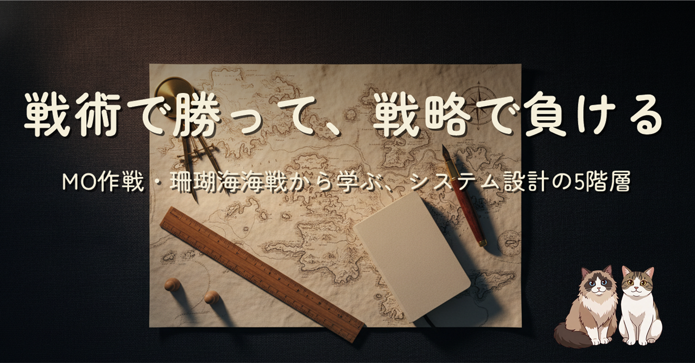
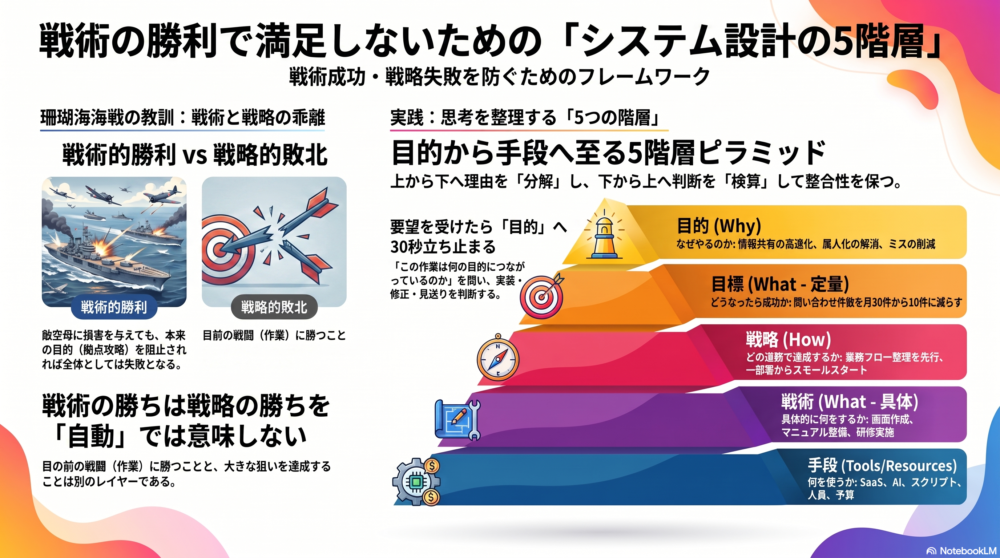

取引先の方から教わった「戦略と戦術の違い」が、太平洋戦争のMO作戦・珊瑚海海戦の話で腹落ちしました。日本側は「戦術的勝利」と言われつつ、作戦目標のポートモレスビー海上攻略は取り下げ、その先の米豪連絡・補給路への圧迫にも届いていません。これがシステム設計・システム導入で「機能は増えたのに業務は楽にならない」「AI を入れたのに成果が見えない」として現れる仕組みを、目的・目標・戦略・戦術・手段の 5 階層フレームと 4 例で整理し、要件定義でそのまま使えるチェックリストにしました。

珊瑚海海戦は、日本側が連合軍に大きな損害を与えつつも、本来やりたかったポートモレスビー海上攻略は取り下げになった戦いです。Royal Australian Navy や Anzac Portal は、これを「日本軍の戦術的勝利、連合軍の戦略的勝利」と整理しています。戦術で勝ちが立っても、その上のレイヤーが未達なら、狙いには届かないという構図です。
これがシステム開発でも、驚くほどそのまま起きます。「機能は増えたが、業務は楽にならない」「サーバーは強くなったが、運用は不安定なまま」「ツールは入れたが、使われていない」「AI を入れたが、成果が見えない」の 4 例に共通するのは、戦術（何をやったか）は増えているのに、目的（なぜやったか）に戻って計測していない、という 1 点です。
本文では、目的・目標・戦略・戦術・手段の 5 階層フレームで整理し直し、要望が来たら 30 秒立ち止まって目的に戻る「4 分岐フロー」と、要件定義・提案書・キックオフ資料にそのままコピペできる 5 つのチェックリストまで書きました。